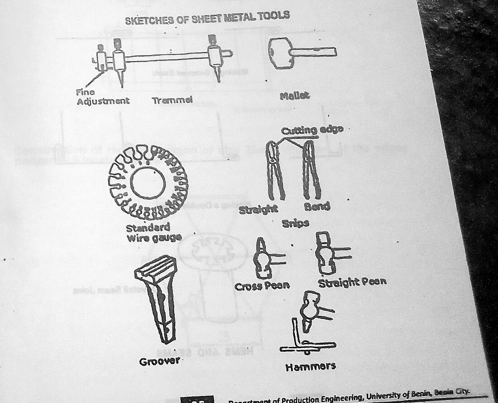
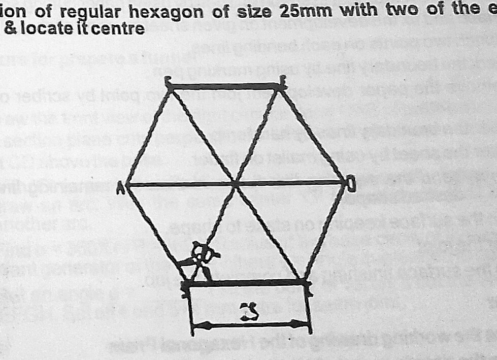
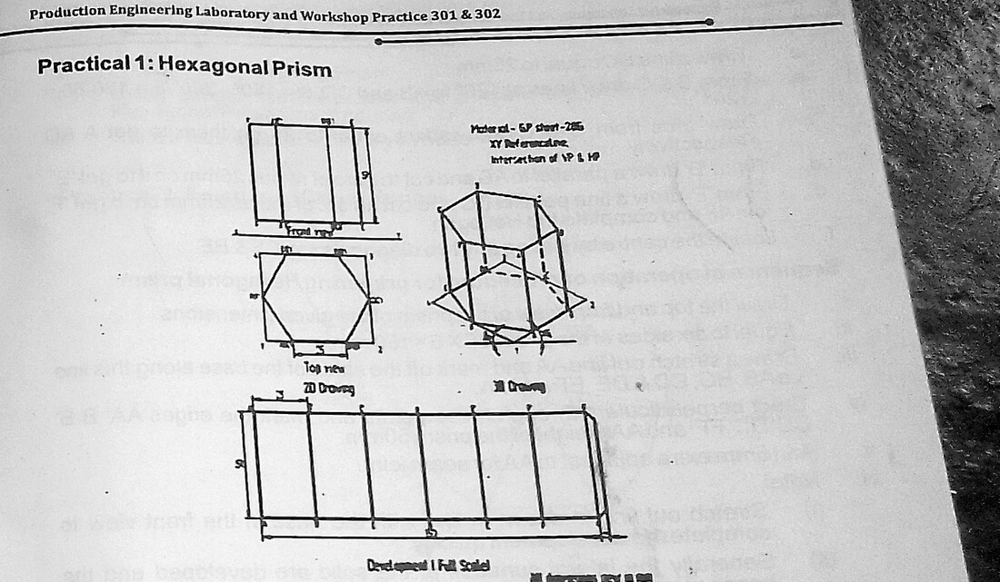
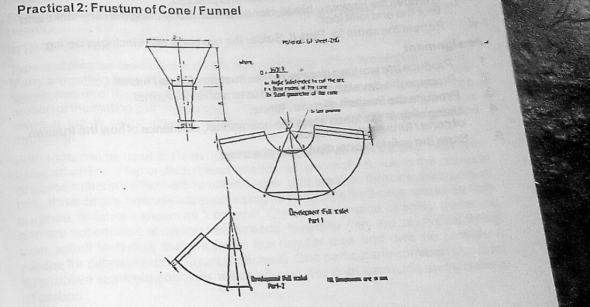
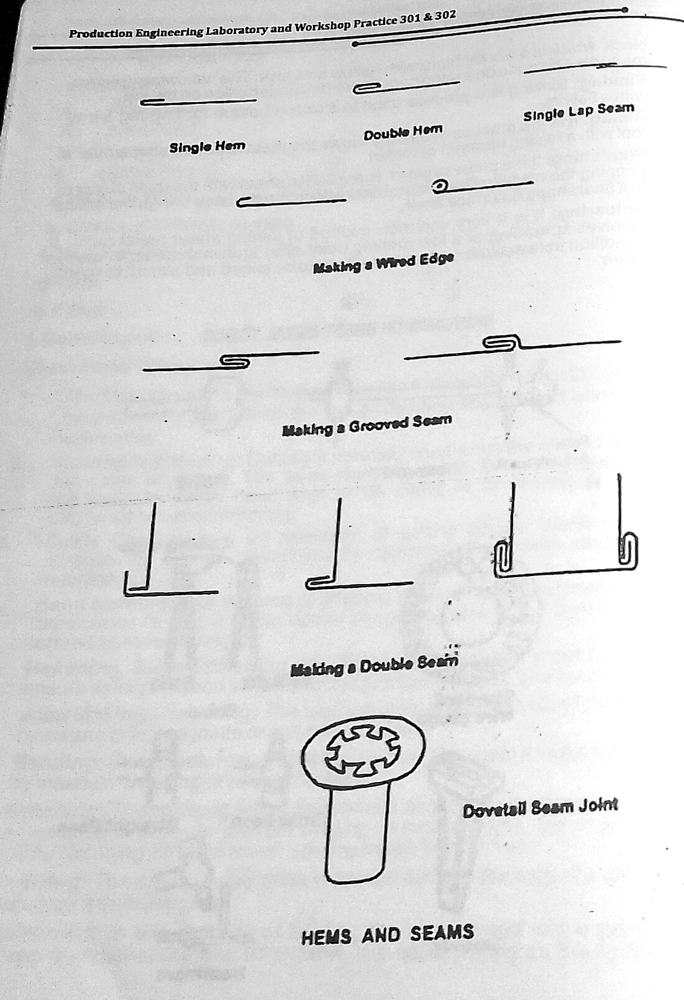

Section: Sheet Metal Work · Code SM 301
Sheet Metal Work: Hexagonal Prism and Frustum of a Cone
Sheet metal work is the one workshop discipline where the job is finished on paper before a single cut is made. Everything — whether the prism closes, whether the funnel is round, whether the seam lands where it should — is settled by the accuracy of the flat pattern. This report covers the development of surfaces, the hand tools and the joints of the tin shop, and the fabrication of a hexagonal prism and a conical funnel from 28-gauge galvanised sheet.
1 Aims
The aim of this practical is to fabricate two hollow articles — a hexagonal prism and a frustum of a cone in the form of a funnel — from flat galvanised sheet, and through that exercise to learn the central skill of the sheet metal trade: surface development, the process of unfolding a three-dimensional shape into the flat blank from which it can be cut and re-formed.
A secondary aim is to understand why sheet metal is worked the way it is. A sheet 0.38 mm thick has essentially no stiffness of its own; every operation in the trade — the hem on a free edge, the seam at a joint, the wired edge on a rim — exists either to create stiffness where the flat sheet has none, or to remove the raw cut edge, which on thin steel is effectively a blade. Recognising that turns a list of joint types into a set of engineering decisions.
2 Objectives
- To know the materials used in the sheet metal shop.
- To familiarise with the tools used in the sheet metal shop.
- To be able to develop the surface of a solid onto a flat sheet.
- To produce a hexagonal prism from a galvanised sheet.
- To produce a frustum of a cone (a funnel) from a galvanised sheet.
- To make and finish the hems and seams required to close each article.
3 Apparatus
Material: galvanised plain (GP) sheet, 28 gauge, 0.38 mm thick.
- Steel ruleMeasuring and setting out the flat pattern.
- ScriberHardened steel point; marks the development lines on the sheet.
- DividerSteps off equal lengths, describes arcs and circles, transfers dimensions.
- TrammelBeam compass for large radii — used for the development arc of the cone.
- Try squareSquaring lines across the blank and checking the folded corners.
- Straight snipsCutting along straight lines and gentle curves.
- Curved / bent snipsCutting internal and external curves such as the funnel arcs.
- Stakes (hatchet, half-moon, funnel, bick iron)Anvils of the tin shop; the sheet is formed over their profiles.
- Mallet (wooden)Bending and forming without stretching or marking the sheet.
- Ball-peen hammer / riveting hammerClosing seams, setting rivets, planishing.
- Folding bar and bench viceProducing straight, sharp bends along a marked line.
- Groover (hand groover)Closing and locking a grooved seam.
- FilesDressing the cut edges after shearing.
- Rivets / soft solderPermanent fastening of the seam where a lock is not used.

4 Theory and Diagrams
4.1 What sheet metal work is
Sheet metal work is the fabrication of articles from metal supplied in sheet form, generally below about 3 mm in thickness, by cutting, bending, forming and joining, without melting the parent metal into a pool as in welding or casting. It is the process behind ducting, tanks, hoppers, chutes, guards, cabinets, cans and the funnel made in this exercise. It matters to a production engineer for a specific economic reason: sheet stock is cheap per unit of enclosed volume, and a hollow article made by folding a flat blank uses a fraction of the material and a fraction of the energy that the same article would take if cast or machined from solid.
The trade divides naturally into four operations, and every job is some sequence of them:
- Development and marking out — unfolding the required solid into a flat pattern and scribing it onto the sheet.
- Shearing — cutting the blank out with snips or a guillotine.
- Forming — bending, folding, rolling or raising the flat blank into shape over stakes and formers.
- Joining and finishing — closing the article with a seam, rivet or solder, and removing or stiffening the raw edges with a hem or wired edge.
4.2 Materials of the sheet metal shop
The sheets used in the shop are supplied in standard gauges, the gauge number increasing as the sheet gets thinner. The material used in this exercise is galvanised plain (GP) sheet of 28 gauge, 0.38 mm thick: mild steel sheet that has been hot-dipped in zinc. The zinc coating gives it corrosion resistance, which is why it is the standard material for buckets, funnels, ducting and roofing, but it also imposes a constraint on the shop — zinc fumes at welding temperature, so galvanised sheet is joined by folding, riveting or soft soldering rather than by gas welding.
The other common materials are:
- Black iron sheet — uncoated mild steel, cheaper, used where the article will be painted or where corrosion is not a concern.
- Cold-rolled mild steel sheet — carbon content 0.1 to 0.3 per cent, giving good ductility for deep forming with adequate strength.
- Stainless steel sheet — the common austenitic grade containing about 18 per cent chromium and 8 per cent nickel, used for food, chemical and hygienic work.
- Copper, brass and aluminium sheet — for decorative work, heat exchangers, and light corrosion-resistant articles respectively.
- Tin plate — mild steel sheet coated with tin, used for containers.
0.1–0.3 %C is not an arbitrary range. Below about 0.1 % the steel is very soft but has little strength, so a formed article will not hold its shape. Above about 0.3 % the steel work-hardens rapidly during bending and cracks at a sharp fold. The cold-rolled sheet range sits where the material will still take a 90° bend over a tight radius without splitting, while retaining enough strength to be useful.
4.3 Development of surfaces
The development of a surface is the flat figure obtained by unrolling that surface onto a plane without stretching, tearing or overlapping it. It is the pattern from which the blank is cut. A surface can be developed exactly only if it is developable — that is, if it can be laid flat without distortion. Prisms, cylinders, pyramids and cones are all developable, because each is generated by a straight line moving in space; spheres and ellipsoids are not, which is why a spherical vessel must be made from approximate gore panels that are then stretched to shape.
Three methods are used, and the choice is determined by the geometry of the solid:
- Parallel line development — for prisms and cylinders, in which the edges or generators are parallel to each other. The development is a rectangle of height equal to the height of the solid and length equal to the perimeter of the base. This is the method used for the hexagonal prism.
- Radial line development — for pyramids and cones, in which the edges or generators all meet at an apex. The development is a sector of a circle struck about that apex with radius equal to the true slant length. This is the method used for the funnel.
- Triangulation — for transition pieces such as a square-to-round duct, where the surface is approximated by a series of triangles whose true shapes are found individually and laid side by side.
Parallel line development — the hexagonal prism
For a right prism the lateral surface unrolls into a plain rectangle. If the base is a regular polygon of n sides of length a, and the prism height is h, then the stretch-out — the length of the development — is the perimeter of the base:
and the development is a rectangle L × h, to which a seam allowance s is added along one vertical edge, giving a blank of (L + s) × h before any hem allowance is added at top and bottom. The fold lines are the n − 1 internal vertical lines spaced a apart.
For this exercise n = 6, a = 25 mm and h = 50 mm, so L = 150 mm, and with a 5 mm seam allowance the blank is 155 × 50 mm.
The regular hexagon itself is constructed geometrically rather than measured, because a measured hexagon accumulates error at the sixth side and fails to close. The construction relies on the fact that the side of a regular hexagon is equal to the radius of its circumscribing circle: a circle is struck with radius equal to the required side, and the radius is then stepped round the circumference with the dividers, which divides it into exactly six equal parts. Joining the six points gives the hexagon, and any closing error is immediately visible as a gap at the last step, which can be corrected by adjusting the dividers by one sixth of the gap.


Radial line development — the frustum of a cone
A right circular cone of base radius r and vertical height H has a slant height
When the conical surface is unrolled it becomes a sector of a circle of radius R. The arc length of that sector must equal the circumference of the base, because unrolling neither stretches nor compresses the surface:
Cancelling 2π from both sides gives the fundamental result of radial line development:
where θ is the included angle of the development sector. A frustum — a cone with its top cut off, which is the shape of a funnel body — is developed by first developing the whole cone and then striking a second, smaller arc of radius R1 about the same apex, where R1 is the slant distance from the apex to the cut. The annular sector between the two arcs is the development of the frustum. By similar triangles, if the top radius is r1,
For the funnel made here, base diameter 60 mm gives r = 30 mm, and the cone height is 40 mm, so R = √(30² + 40²) = √2500 = 50 mm and θ = 360 × 30/50 = 216°. The spout end, of radius 5 mm, is cut at R1 = 50 × 5/30 = 8.33 mm. The development is therefore an annulus of 216° between radii 8.33 mm and 50 mm, plus a seam lap.

Before cutting, measure the arc length of the outer development with a strip of paper and compare it against πd of the finished base. If the two agree the pattern will close; if they do not, the error is in the pattern and not in your forming, and no amount of hammering will fix it later. On a 60 mm funnel the outer arc should measure 2π(30) = 188.5 mm.
4.4 Hems, seams and edge treatment
Two things must be done to every sheet metal article after forming: the free edges must be dealt with, and the article must be closed along its join. Both are structural, not cosmetic.
A hem is a folded-over edge. Its purposes are to remove the raw sheared edge, which is sharp enough to cut a hand, and to double the thickness locally, which stiffens the rim of an otherwise floppy article. A single hem is one fold; a double hem folds twice for greater strength. A wired edge is a hem rolled around a length of wire, and it gives by far the greatest stiffness for the least added weight — the wire acts as a ring beam around the rim. This is why the top of a bucket, a bowl or a funnel is almost always wired.
A seam is the joint between two edges. The principal types are:
- Lap seam — the simplest: one edge overlaps the other and the two are riveted or soldered. Quick, but it relies entirely on the fastening for strength.
- Grooved seam — both edges are hooked and then locked together and flattened with a hand groover. Strong, self-supporting and reasonably leak-tight, and it is the standard seam for cylindrical and conical bodies.
- Single and double seams — used to attach a bottom to a body, the flange of the bottom being folded up over the body edge.
- Corner seam — joins two edges meeting at a corner of a rectangular article.
- Knocked-up (flanged) seam — the edges are flanged and beaten flat against the body.

A grooved seam consumes sheet from both mating edges: each edge must be turned by the width of the lock, so the flat blank has to be longer than the true stretch-out by roughly twice the lock width. A blank cut to exactly 150 mm for a 150 mm stretch-out will produce a prism that is visibly undersize once the seam is closed. The 5 mm allowance added here is the allowance for that.
5 Table of Values
Table 1 gives the materials data stated in the manual. Tables 2 and 3 give the design dimensions for the two articles together with the development quantities calculated from equations (1), (2), (4) and (5). These are calculated pattern dimensions, not measured readings.
| Material | Specification | Characteristic / use |
|---|---|---|
| Galvanised plain (GP) sheet | 28 gauge, 0.38 mm | Zinc-coated mild steel; corrosion resistant; material used in this exercise |
| Cold-rolled mild steel sheet | 0.1 – 0.3 % carbon | Ductile enough for sharp folds, strong enough to hold shape |
| Stainless steel sheet | 18 % Cr, 8 % Ni | Austenitic; hygienic and chemical-resistant work |
| Black iron sheet | Uncoated mild steel | General work that will be painted |
| Tin plate | Tin-coated mild steel | Food containers |
| Quantity | Symbol | Value | Source |
|---|---|---|---|
| Number of sides | n | 6 | Specified |
| Side length of hexagon | a | 25 mm | Specified |
| Height of prism | h | 50 mm | Specified |
| Radius of circumscribing circle | Rc | 25 mm | Equal to side, for a regular hexagon |
| Across-corners distance | 2Rc | 50.00 mm | 2a |
| Across-flats distance | — | 43.30 mm | a√3 |
| Stretch-out (perimeter) | L | 150 mm | Eq. (1): 6 × 25 |
| Seam allowance | s | 5 mm | Grooved seam lock |
| Blank size before hems | — | 155 × 50 mm | (L + s) × h |
| Number of fold lines | — | 5 | n − 1 internal folds |
| Internal angle of each fold | — | 120° | (n − 2)180°/n |
| Base area | — | 1623.8 mm² | (3√3/2)a² |
| Quantity | Symbol | Value | Source |
|---|---|---|---|
| Base diameter | d | 60 mm | Specified |
| Base radius | r | 30 mm | d/2 |
| Vertical height of cone | H | 40 mm | Specified |
| Slant height of full cone | R | 50.00 mm | Eq. (2): √(30² + 40²) |
| Sector angle of development | θ | 216° | Eq. (4): 360 × 30/50 |
| Outer arc length of development | — | 188.50 mm | 2πr; check dimension |
| Spout (top) radius | r1 | 5 mm | Specified |
| Inner development radius | R1 | 8.33 mm | Eq. (5): 50 × 5/30 |
| Slant height of frustum | R − R1 | 41.67 mm | Difference of the two arcs |
| Half-apex angle of cone | α | 36° 52′ | tanα = r/H = 0.75 |
| Seam allowance (body lap) | — | 4 mm | Lap seam along one radial edge |
| Wired-edge allowance at rim | — | 5 mm | Added outside the 50 mm arc |
6 Procedure
EPX 1 — Hexagonal prism
- The GP sheet was laid flat on the bench and cleaned, and a straight reference edge was established along one side with the steel rule and try square.
- A base line 155 mm long was scribed from the reference edge, and perpendiculars 50 mm high were squared up at each end to give the outline of the blank, 155 × 50 mm.
- The 150 mm stretch-out was stepped off along the base line with the dividers set to 25 mm, giving six equal panels, and the remaining 5 mm strip was marked as the seam allowance. Each division was squared up as a fold line.
- Separately, the hexagonal plan was constructed for reference: a circle of radius 25 mm was struck, and the same 25 mm divider setting was stepped six times around its circumference; the six points were joined to give the regular hexagon.
- The blank was cut out with straight snips, cutting just outside the scribed line, and the edges were dressed with a file to remove the burr.
- The seam allowance edge and the opposite edge were each turned through a hook on the folding bar, ready for the grooved seam.
- The five internal fold lines were folded in turn to 120°. The blank was clamped in the folding bar with the fold line exactly level with the top of the bar, and brought over with the wooden mallet, working along the length of the fold rather than starting at one end.
- The two hooked edges were engaged, the seam was locked with the hand groover and flattened, and the prism was checked for squareness and for equality of the across-flats dimension in three directions.
- A hexagonal base was cut to the developed plan with a flange allowance, the flange was turned up, and the base was attached to the body with a single seam and knocked up tight.
EPX 2 — Frustum of a cone (funnel)
- The elevation of the funnel was drawn out to establish the apex: the two slant sides were produced until they met, and the slant length R was measured off that drawing as 50 mm, confirming the calculated value.
- A centre point was punched on the sheet to serve as the apex of the development. With the trammel set to 50 mm, the outer arc was struck; with it reset to 8.33 mm, the inner arc was struck about the same centre.
- The sector angle of 216° was set out from the apex. Rather than relying on a protractor on sheet steel, the angle was laid out by chord: the dividers were used to step the calculated outer arc length of 188.5 mm around the 50 mm arc, which fixes the second radial line exactly.
- A 4 mm lap allowance was added outside one radial line and a 5 mm wiring allowance outside the 50 mm arc, and the complete pattern was scribed.
- The blank was cut out, the straight radial edges with straight snips and the two arcs with curved snips, and all edges were filed smooth.
- The blank was rolled into the conical form over the bick iron and the funnel stake, working progressively from the small end and taking many light passes with the mallet rather than a few heavy ones.
- The lap was closed, checked for a fair cone with no flats, and riveted and soft-soldered along its length.
- The rim allowance was turned over a length of wire on the stake and closed down to form the wired edge, and the funnel was checked for roundness at the mouth by measuring the diameter in several directions.
7 Precautions
- Gloves were worn when handling cut sheet. A sheared edge on 0.38 mm sheet is the most common source of injury in the tin shop, and it cuts before it is felt.
- Safety glasses were worn throughout, particularly when riveting and when hammering on a stake, where a fragment can fly.
- All cut edges were filed and deburred as soon as the blank was cut, not left until the end.
- Offcuts were placed directly into the scrap bin and never left on the bench or the floor.
- Snips were used with the sheet supported, and the waste side was allowed to curl away from the hand. Long cuts were made with the full length of the blade rather than closing the snips fully, which leaves a jagged step.
- Curved cuts were made with curved snips only; forcing straight snips round a curve distorts both the sheet and the tool.
- A wooden mallet, not a steel hammer, was used for all folding and forming, so that the sheet was bent rather than stretched and the galvanised surface was not marked.
- The correct stake was selected for each forming operation, and the stake was seated firmly in the bench plate before striking.
- Fold lines were checked against the drawing before each fold, since an unfolded line can be folded but a wrongly folded line leaves a permanent crease.
- Measurements were re-checked after marking out and before cutting — the blank cannot be made larger once it has been sheared.
- The soldering iron and any flame were kept clear of combustible material, and the soldering was done with adequate ventilation because of the zinc coating.
8 Discussion
Both articles were produced, and the difficulties the two of them present are usefully different.
The hexagonal prism is geometrically the simpler job, and its development is trivial — a rectangle. The difficulty lies entirely in the folding. A prism whose panels have all been marked correctly at 25 mm will still refuse to close: after the fifth fold a visible gap of two or three millimetres is left at the seam, and since the marking out was right, the error is not in the pattern. What had happened is that a fold in sheet metal is not a mathematical line. The sheet bends over a finite radius, and the material on the outside of the bend stretches while the material on the inside is compressed; the effective length consumed by each fold is therefore slightly more than zero. With five folds, each consuming roughly half a millimetre, the perimeter of the closed prism falls several millimetres short of the flat stretch-out. Adding a bend allowance to the blank is what brings the seam together. This is the practical meaning of the bend allowance that the drawing office adds to every sheet metal pattern, and it is not something you appreciate until a prism refuses to close in your hands.
A second fault on the prism concerns the sharpness of the folds. Where the fold line is not exactly level with the top of the folding bar, the sheet bends over a larger radius and the corner comes out rounded rather than crisp, and the across-flats dimensions then differ measurably between the three directions. The remedy is purely one of setting up: clamp accurately, and bring the sheet over along the whole length of the fold at once rather than starting at one end, which twists the blank.
The funnel inverted this. Its forming is forgiving, because a rolled cone is a smooth, continuous shape with no discrete folds to accumulate error, but its development is where the mistakes live. Setting out the 216° sector with a protractor laid on the sheet leaves the cone noticeably out — the lap either overlaps far too much or leaves a gap, depending on which end the closing is started from. A protractor of 100 mm radius resolves perhaps half a degree at best on a scribed steel surface, and half a degree of the sector angle is about 0.4 mm of arc at the rim, but the cumulative setting-out error over 216° can reach several degrees. Laying the angle out by chord instead — stepping the calculated arc length of 188.5 mm round the arc with the dividers — removed the problem entirely, because it references the one dimension the finished job actually has to satisfy: the circumference of the base.
That is the general lesson of this practical. Development is exact arithmetic, but marking out on sheet is a physical process with its own tolerances, and the right technique is the one that puts the tolerance where it does least harm. Stepping a chord with dividers is more accurate than protracting an angle; a divider setting stepped six times round a circle is more accurate than six measurements of 25 mm laid end to end; and a check measurement against πd catches an error while it can still be corrected with a file rather than with a new blank.
Finally, the value of the edge treatments became obvious in handling. The bare 0.38 mm sheet is floppy enough to deform under finger pressure, and the funnel mouth goes visibly oval before the rim is wired. Once the wire is rolled in, the mouth becomes rigid and holds its diameter closely in every direction. The hem and the wired edge are therefore not finishing touches — they are the structural members of a sheet metal article, and the reason a 0.38 mm funnel is a usable object at all.
9 Conclusion
The objectives of the practical were met. The materials of the sheet metal shop were identified, with 28-gauge (0.38 mm) galvanised plain sheet used for both articles, and the hand tools — marking and measuring tools, snips, stakes, folding bar, mallet, groover and files — were identified and used.
The principle of surface development was applied in both of its major forms. A hexagonal prism of 25 mm side and 50 mm height was produced by parallel line development from a rectangular blank of 155 × 50 mm, having a stretch-out of 150 mm plus a 5 mm seam allowance, with the hexagonal plan constructed geometrically by stepping the radius six times round the circumscribing circle. A funnel in the form of the frustum of a cone, of 60 mm base diameter and 40 mm cone height, was produced by radial line development from a 216° annular sector between radii of 8.33 mm and 50 mm, the sector angle following from θ = 360 r/R.
Both articles were closed with seams and finished with hemmed and wired edges. It is concluded that the accuracy of a sheet metal article is set almost entirely by the flat pattern, and that the flat pattern must allow not only for the seam but for the material consumed in each bend; and further, that where a development requires an angle, laying that angle out as a stepped chord is markedly more accurate on sheet than protracting it directly.
Questions asked in the material
The manual sets the standard five-part assignment at the close of each sheet metal exercise.
1. Show a working drawing of the article produced.
The working drawings were produced to scale in the drawing book. Each comprises three views — plan, elevation and the flat development.
Hexagonal prism. Plan: regular hexagon, 25 mm side, 43.30 mm across flats, 50.00 mm across corners. Elevation: 50 mm high. Development: rectangle 155 × 50 mm, divided by five fold lines at 25 mm centres, with the last 5 mm strip hatched as the seam allowance.
Funnel. Elevation: frustum, base ø60 mm, top ø10 mm, cone height 40 mm, slant sides produced to an apex. Plan: two concentric circles, ø60 and ø10. Development: annular sector of 216° between radii 8.33 mm and 50 mm, with a 4 mm lap on one radial edge and 5 mm wiring allowance outside the outer arc.
2. Using good sketches and short notes, state the operational steps.
- Develop. Calculate the flat pattern — stretch-out L = na for the prism; sector angle θ = 360 r/R for the cone — and add seam, bend and hem allowances.
- Mark out. Establish a straight reference edge, then scribe the pattern with rule, try square, dividers and trammel. Step chords with dividers in preference to protracting angles.
- Cut. Shear the blank with straight snips on straight lines and curved snips on arcs, cutting just outside the line.
- Deburr. File every cut edge immediately.
- Prepare the joint. Turn the hooks for a grooved seam, or the lap for a lap seam, on the folding bar.
- Form. Fold to the marked lines on the folding bar with a wooden mallet, or roll over the stake for a conical body, using many light passes.
- Close. Engage and lock the seam with the groover, or rivet and solder the lap.
- Finish. Turn the hem or wired edge on the rim, attach the base, check the article for shape and dimension.
3. State the uses of each tool used during the exercise.
| Tool | Use in this exercise |
|---|---|
| Steel rule | Setting out the 155 mm and 50 mm blank dimensions. |
| Scriber | Marking the development lines permanently on the galvanised surface. |
| Dividers | Stepping the 25 mm panels, constructing the hexagon, and stepping the 188.5 mm chord round the cone development. |
| Trammel | Striking the 50 mm and 8.33 mm development arcs about a common apex. |
| Try square | Squaring the fold lines from the reference edge and checking the folded corners. |
| Straight snips | Shearing the straight edges of both blanks. |
| Curved snips | Shearing the two arcs of the funnel development. |
| Files | Removing the burr from every sheared edge. |
| Folding bar / vice | Producing the five 120° folds of the prism and turning the seam hooks. |
| Stakes (bick iron, funnel stake) | Forming the conical body and closing the wired edge. |
| Wooden mallet | All bending and forming, without stretching or marking the zinc coating. |
| Hand groover | Locking and flattening the grooved seam of the prism. |
| Ball-peen / riveting hammer | Setting the rivets in the funnel lap and planishing. |
| Soldering iron and solder | Sealing the funnel lap seam. |
4. List out the new things you have learnt.
Answered under What I learned.
5. State the safety precautions you observed.
Listed in full under Precautions. The ones specific to sheet metal are: gloves against sheared edges; immediate deburring of every cut; offcuts straight into the scrap bin rather than onto the bench; eye protection when riveting and hammering on stakes; and ventilation when soldering galvanised sheet, because the zinc coating gives off fumes when heated.
Special questions
S1. Derive the sector angle of the development of a right circular cone, and hence find the development of a cone of base diameter 60 mm and vertical height 40 mm.
Unrolling the conical surface neither stretches nor compresses it, so the arc length of the developed sector equals the circumference of the base circle. If the sector has radius R (the slant height) and included angle θ,
For r = 30 mm and H = 40 mm: R = √(30² + 40²) = 50 mm, so θ = 360 × 30/50 = 216°. The development is a 216° sector of a circle of radius 50 mm, whose arc measures (216/360) × 2π × 50 = 188.5 mm — equal, as required, to π × 60.
S2. The funnel is a frustum, not a full cone. How is the pattern modified, and what is the inner radius for a spout of 10 mm diameter?
The full cone is developed first, then a concentric arc is struck about the same apex at the slant distance from the apex to the plane of the cut. By similar triangles R1/R = r1/r, so
The pattern is therefore the annular region of 216° between radii 8.33 mm and 50 mm. Note that the sector angle is unchanged by the truncation — both arcs subtend the same 216° at the apex, which is why the small end of the frustum automatically comes out at the correct 10 mm diameter: (216/360) × 2π × 8.33 = 31.4 mm = π × 10.
S3. Why must a hexagon be constructed with dividers rather than measured side by side with a rule?
Because the errors behave differently. If each of the six sides is measured independently with a rule, each carries an independent error of perhaps ±0.3 mm, and these accumulate around the figure; the hexagon does not close, and the closing error appears entirely at the sixth side, where it is worst. Stepping a single divider setting round a circumscribing circle uses the same length six times, so there is only one error, not six, and it shows up as a visible gap at the last step which can be corrected by opening or closing the dividers by one sixth of the gap. Two or three iterations bring the closure to within the width of a scribed line. The construction relies on the property that in a regular hexagon the side equals the circumradius, because each of the six triangles formed by joining the centre to two adjacent vertices is equilateral.
S4. A prism blank is cut to exactly the calculated stretch-out and the finished prism comes out undersize. Explain.
Two effects, both of which the calculated stretch-out ignores. First, the seam: a grooved seam turns material on both mating edges into the lock, and that material is removed from the perimeter of the finished article. Second, the bend allowance: the neutral axis of a bend lies at roughly 0.4 of the thickness from the inside surface, and the length of sheet consumed by a bend of inside radius r and angle φ is φ(r + 0.4t), which is greater than the length of the sharp-corner idealisation used in the flat development. With five folds in a hexagonal prism the difference accumulates. Both are allowed for by adding a seam allowance (5 mm here) and a bend allowance to the blank before cutting.
What I learned
- That in sheet metal work the job is finished on paper first. The development determines everything; forming only executes it.
- The distinction between developable and non-developable surfaces, and why prisms, cylinders, pyramids and cones can be made exactly from flat blanks while spheres cannot.
- The three methods of development — parallel line, radial line and triangulation — and how to recognise which one a given solid calls for.
- The derivation and use of θ = 360 r/R, and the check that the arc of the development must equal πd of the base.
- That a fold consumes material, so the flat blank must be longer than the calculated stretch-out — the bend allowance is real, and ignoring it is why a prism comes up short and will not close.
- That stepping a chord with dividers beats laying out an angle with a protractor on sheet steel, because it references the dimension that actually has to be satisfied.
- That a divider setting stepped six times round a circle carries one error, while six rule measurements carry six.
- That hems, wired edges and seams are structural: they are what gives a 0.38 mm article the stiffness to be usable, and what removes an edge sharp enough to cut a hand.
- That galvanised sheet is folded, riveted or soft-soldered rather than welded, because the zinc coating fumes at welding temperature.
- That a wooden mallet bends sheet while a steel hammer stretches it — and that stretched sheet cannot be un-stretched.